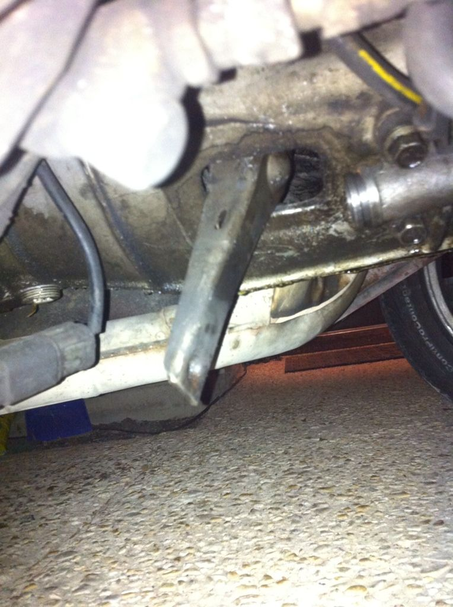

-
Long story short I was driving then went to push in the clutch and heard a snap and the clutch petal stayed on the floor, I pulled over checked the fluid and it was empty, I looked under and found all my fluid on the ground along with parts of the slave. I know thats an easy fix but then I noticed this.

this is the clutch fork correct? if so could someone please tell me why this is hanging down and if I have a huge problem or if its a simple fix. The Haynes manual doesnt really say to much about it that helps.
Huge thanks in advance.
87 Daily Drifter -
It's held in to the throw out bearing dealy bob with a retaining clip on the backside of it. Given how little room there is it's probably going to be pretty hard to reattach that…
Best bet is to pull the tranny.
The clip for the pivot ball is still on the fork. Can you look up inside and see if there's still a retaining clip?
Google search came up with a youtube vid…
http://www.youtube.com/watch?v=67wQk6TMCXA[/video]]
-
if the ball didn't snap off the end of the pivot ball bolt/part itself, and it just seems like it popped off, you can attempt to stick long needle nose pliers to squeeze the retainer spring in the middle so it's tighter, then try and jam it back onto the pivot ball. no harm in trying. you'll be removing it anyway if it doesn't work out. -
head of pivot ball likely snapped, not very uncommon. Which really sucks....
I had cut open the bellhousing of the tranny and installed a spare pivot from another vehicle (I was in a pinch) but best bet would be to drop the tranny and do it the right way. HD replacement ones are like $20 or something…
-
When it happened to my T-5 I went ahead and bought a 30A with the iron fork since I was taking out the transmission. :-D
"Let's play Battleship! There's enough Z's for that.."
My thread thingy: http://z31performance.com/showthread…ep-Zed-84Zed31 -
Just upgraded my 30a to a heavy duty pivot and fork. I suggest it to anyone. These thing is burlyDD:
86 Black Turbo 5spd
The Fallen:
84 red n/a auto Slicktop, 86 Black 2+2 n/a 5spd
Parting Currently:
86 White Turbo 5spd, 88 n/a 5spd, 84 AE, 88 Shiro #64
Garage Sale -
I found fork from z speed for 70, is that the one you guys are talking about?Gregmatic wrote: head of pivot ball likely snapped, not very uncommon. Which really sucks....
I had cut open the bellhousing of the tranny and installed a spare pivot from another vehicle (I was in a pinch) but best bet would be to drop the tranny and do it the right way. HD replacement ones are like $20 or something…
MADMIKE wrote: Just upgraded my 30a to a heavy duty pivot and fork. I suggest it to anyone. These thing is burly
http://www.zspeedperformance.com/Nissan … 005Z31.htm
87 Daily Drifter -
I've broken 2 pivot balls so far. The good news is they are cheap. The bad news is you have to pull the transmission. -
Yep, that's the one. I have one in my Z and love it.Codydb13 wrote:
I found fork from z speed for 70, is that the one you guys are talking about?
http://www.zspeedperformance.com/Nissan … 005Z31.htm
1986 300ZX Turbo…sold
1990 Skyline GT-R…new money pit
2014 Juke Nismo RS 6-speed…daily -
Well I've just been informed that the heavy duty fork from z-speed does not work with the 71c, and I can't find any others out there. Any one know of any?
87 Daily Drifter

Copyright © 2006–. All rights reserved. Privacy Policy